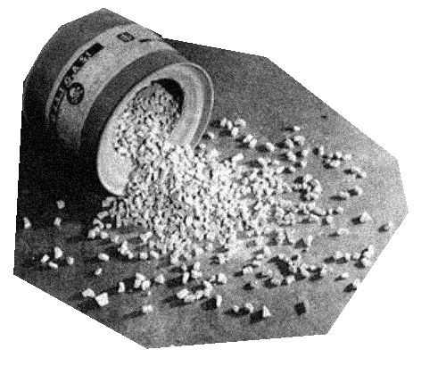

Il Gas dei Lager

Lo Zyklon B (tradotto letteralmente Ciclone B) è un agente tossico a base di acido prussico utilizzato
soprattutto nei campi di sterminio nazisti di Auschwitz e Majdanek. Inizialmente era un insetticida usato in Germania prima
e durante la seconda guerra mondiale per disinfettare navi, caserme, vestiti, magazzini, fabbriche, granai e altro, ma quando
si scoprì che il gas emesso nell’aria era altamente velenoso, venne usato come arma per uccidere più di un milione di persone
nei campi di concentramento
Lo Zyklon B si è dimostrato un’arma efficiente ed economica durante l’Olocausto per uccidere un gran numero
di persone in pochissimo tempo. Veniva utilizzato contro i cosiddetti ebrei “indesiderati” che comprendevano donne, bambini, anziani
e uomini ritenuti inadatti al lavoro. La produzione del letale agente fumigante fu affidato a due aziende tedesche:
Tesch e Stabenow di Amburgo e Degesch di Dessau, i direttori di entrambe le società alla fine furono processati e condannati a morte il 16 Maggio 1946.